Techniques of top Kaggle competitors
Collects the machine learning techniques used by the winners of Kaggle competitions, processing in bulk, with language models, the public code of the teams at the top of the leaderboard. Each notebook becomes an analysis in four numbered sections and then tables of techniques, of contrasts between common practice and the expert's choice and a glossary, with the output validated with Pydantic and checked against the source text.
- 745competitions with collected metadata
- 3,508notebooks with extracted code
- 2,720analyses written by an LLM
- 19,185catalogued techniques
Collection and analysis
EXTRACTION

DATABASE AND QUALITY

Competition metadata comes from the Kaggle API and notebook code is collected with Selenium. The corpus brings together the notebooks of the teams at the top of the leaderboard and the most voted ones in each competition, which gives the two sides the contrast step compares.
Each notebook goes whole to an LLM, together with the competition description, and comes back as an analysis in four numbered sections. The numbering is imposed by the prompt and is what the next step uses to cut the text.
Structuring and quality
A single call per analysis turns the prose into tables, with the output validated with Pydantic. The ML pipeline stage is an enum listed explicitly in the prompt, and a normaliser fixes the predictable variants before validation. Processing runs on a pool of ten slots with key rotation across providers and resumes from a checkpoint for each notebook.
A contrast is only recorded when the analysis itself describes both approaches, the one most competitors used and the one the winning team adopted, which keeps the model from filling in common practice by guesswork. An audit script checks the extracted rows against the source text and produces a report.
The database
The database holds 19,185 techniques catalogued from 2,720 analyses, covering 2,528 of the 2,603 notebooks with an ML pipeline. Each technique carries its pipeline stage, a rarity grade and, when the text states it, the gain obtained and the number that goes with it.
Python · pandas · Kaggle API · Selenium · Groq · Pydantic · Jupyter · matplotlib